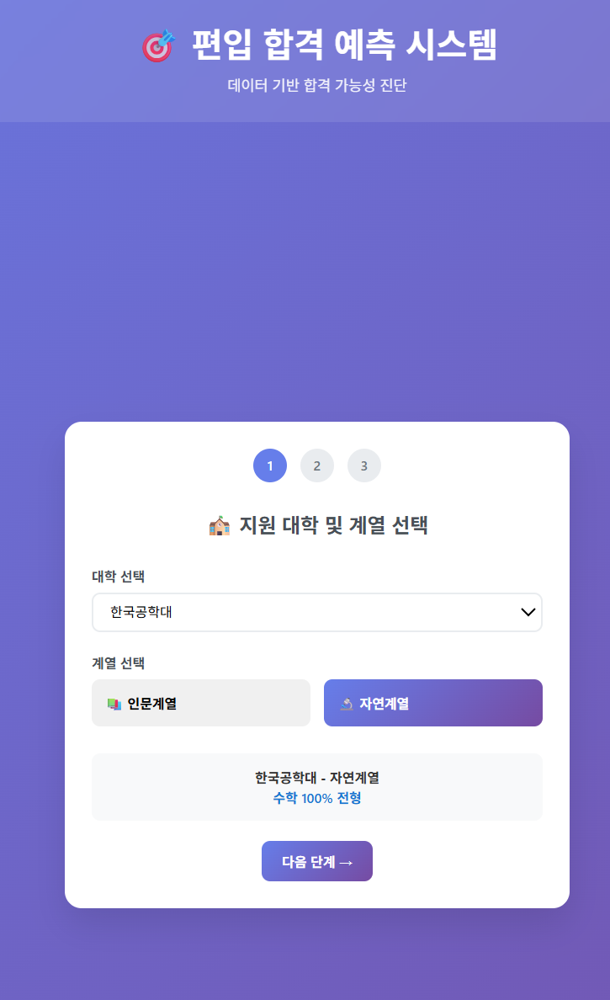
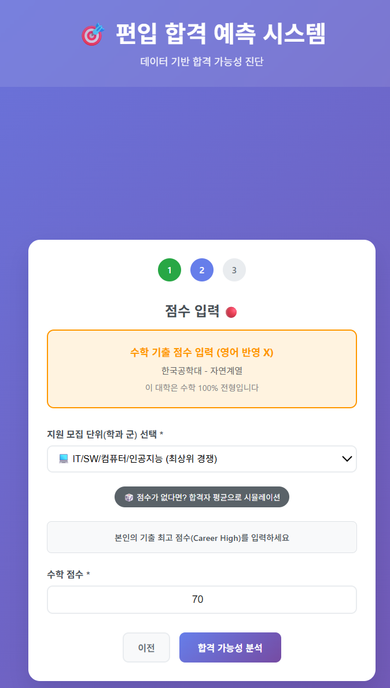
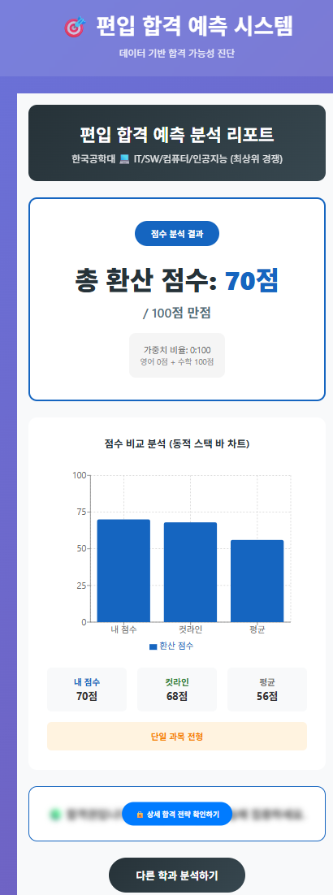
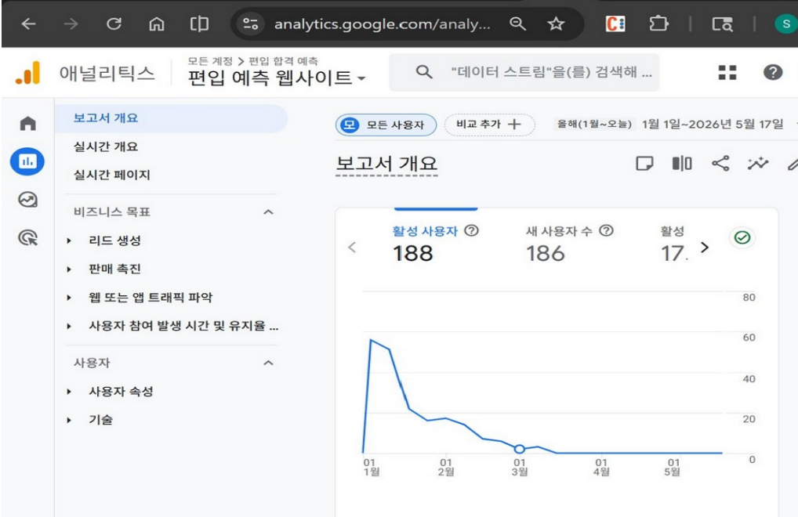

PyeonipCheck-Web
완료라이브 운영 후 비용 최적화로 종료 · 2025.11–2026.02
배경
편입 준비생은 학교마다 흩어진 모집요강과 합격선을 일일이 찾아야 하는 정보 비대칭이 큰 영역. 그 불편을 직접 풀고 싶어 시작.
설계
44개 대학 모집요강 PDF 파싱 → 합격선 계산 → 결과 대시보드까지 백엔드·프론트·배포를 1인으로 설계.
장애 대응
실사용자 접속 중 데이터 오류가 발생하자, 서버 재배포 리스크를 피해 "즉시 차단 vs 근본 수정"으로 나눠 사용자 영향 최소화를 우선.
배운 점
급할 때 우선 막는 것과 제대로 고치는 것은 다른 결정이며, 라이브에선 그 우선순위를 직접 판단해야 한다는 걸 체득.
실사용자 검증
188활성 사용자
186신규 유입
같은 학교 편입생을 타깃으로 운영해 유입 경로가 분명했고, 실제 사용자가 들어왔습니다.

FastAPI · React · AWS · SQLite
Repository